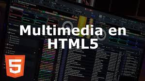

Usando HTML5 de audio y video
Los elementos audio> y video> permiten la manipulación de nuevos contenidos multimedia.
Ejemplo de video:
Ejemplo de Audio:
WebRTC
Esta tecnología, donde RTC es sinónimo de comunicación en tiempo real, permite conectar con otras personas y controlar servicios de videoconferencia directamente en el navegador, sin necesidad de un plugin o una aplicación externa.
Usando la API de la cámara
Permite utilizar, manipular y almacenar una imagen de la cámara del ordenador.
Track and WebVTT
El elemento track> permite subtítulos y capítulos. WebVTT es un formato de pista de texto.